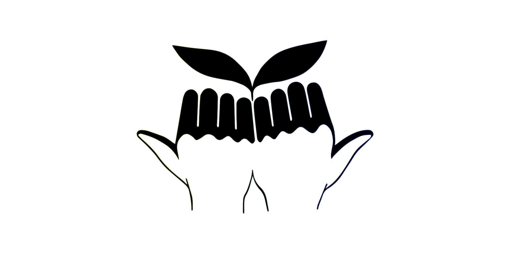
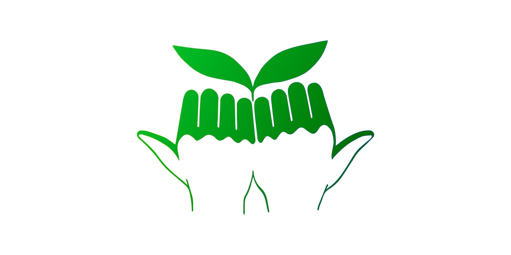

Bull City Community Garden Logo
Digital Vector, 2020
I designed a logo for Bull City Community Garden (collaboration between Sustainable Duke and the city of Durham, NC). The logo incorporates Durham's iconic "Bull City" hand gesture. The logo was first drawn on my iPad using Procreate, then translated into a vector using Adobe Illustrator.
The logo is featured on Bull City Community Garden's X account page.

